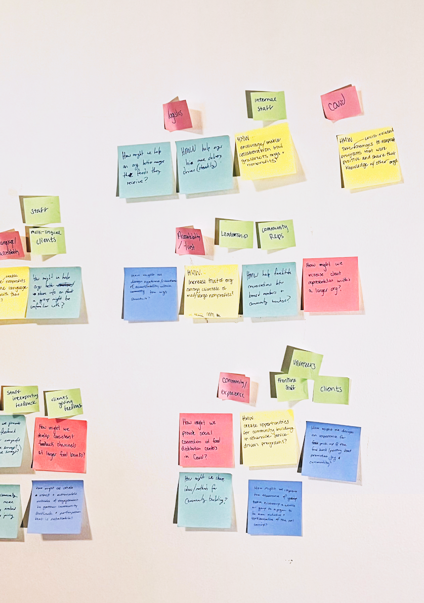
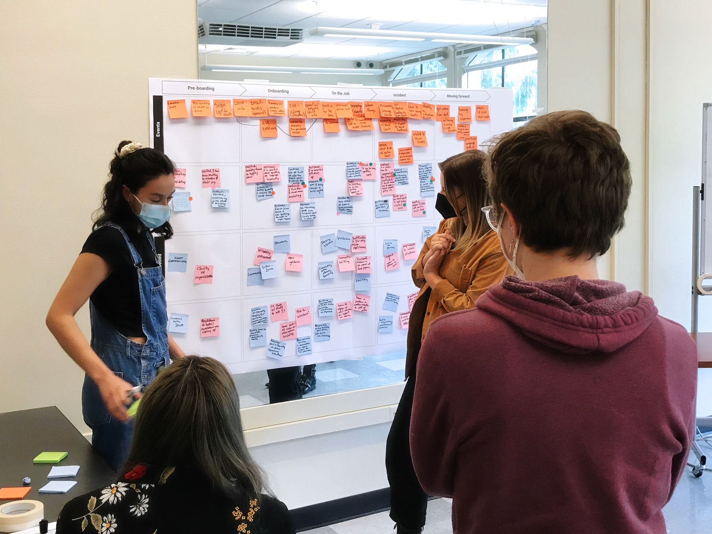
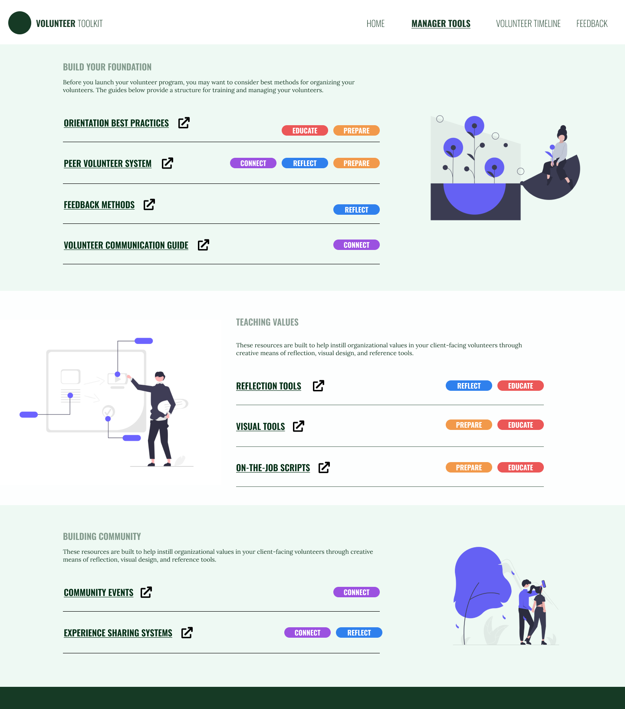

Overview

This toolkit is the product of our Capstone project for MS in HCDE at UW, a 6-month project in which, as a team consisting of 2 UX researchers and 2 UX designers, we investigated and addressed a problem with a research-driven approach. In our case, we focused on food insecurity in Seattle and the interactions between food providers and those who utilize their services. We were particularly interested in the experiences of volunteer managers and volunteers when it comes to orientation and educational tools around food justice values such as anti-racism and trauma-informed care.
Problem Statement
Volunteers are an integral part of a nonprofit organization. Without them, many nonprofits would not be able to run their programs, provide services, or have the reach and capacity they currently do. Client-facing volunteers, or those who have direct interactions with people accessing an organization’s programs or services, are especially important as they act as a link between an organization and the communities they serve. Unfortunately, even well-intentioned volunteers may not be aware of the internal biases and values they bring to their work that may differ from the organization’s values.
This is particularly problematic for social value-oriented organizations like food justice nonprofits whose missions and services strive towards equity and community building. When a volunteer’s mismatched values show up in their actions and attitudes while they work, this can damage a client’s perception of and trust in the organization. Rather than educating volunteers after something goes wrong, we want to prevent negative interactions from happening in the first place. Our project aimed to answer the question:
How might we help food justice organizations better prepare volunteers to demonstrate organizational values in their interactions with clients?
Role & Responsibilities
My main role was as one of the two designers, but I was more of a UX generalist, participating in both research and design. We worked together to determine the path of research and conduct a variety of methodologies in order to better understand our problem space and come up with a solution. I also led building the identity and wireframes in Figma.
- Volunteers need and want resources that make them feel more prepared and supported for interactions with clients. In some cases, they try to create these resources for themselves, but would prefer if they were distributed by the organization itself.
- Volunteers want more opportunities to learn about food insecurity and how to incorporate an equity mindset.
- We walked away with a future-state journey map, which inspired many of the resources in our finished toolkit. This journey map allowed us to explore which tools and resources could help volunteers feel more secure in their client-facing roles.
Process

Our approach was both expansive and comprehensive. We initially needed to gain context about the issue of food insecurity and the different approaches Seattle-based food nonprofits were taking to tackle the problem. During this research phase, we incorporated a literature review to understand how certain terms related to food inaccessibility were defined by government agencies and researchers in the field. In tandem with this, we researched who were the different organizations addressing food insecurity and how they worked together as a system of food banks, urban farms and mutual aid networks. We didn’t limit the scope to only organizations with formal non-profit or government-funded status, but also researched into individual and community-run groups such as the community fridge network.
We were able to conduct information interviews with a variety of upper management staff and organizers at food banks, small to mid-sized nonprofits, urban farming organizations, a grassroots mutual aid group and one member in academia who was working to address food insecurity through the UW network. This helped us begin to understand challenges or barriers organizations experience in distributing food to those who are food insecure.
From the research, we identified a gap in value alignment between organizations and volunteers, and narrowed our research scope. We spoke directly with volunteer managers and volunteers to better understand the cause of value misalignment and where we might introduce a design intervention. We worked to identify areas of tension between organizational and volunteer values and began to create a journey map of the volunteer experience.
Next, we created a survey to target people who have volunteered in a client-facing role at food-focused organizations within the last year. Questions focused on motivations for volunteering, the onboarding or training experience received from the nonprofit, perceptions of preparedness with interacting with clients. From the survey, we also recruited 5 participants for a follow-up interview and design activity, conducted via Zoom and using a shared Miro board. The design activity consisted of two exercises: 1. a rapid exercise in defining a list of food justice values identified as important through the literature review and informational interviews and 2. a values alignment exercise where participants mapped out where those terms fell in terms of importance to them in their role and visibility at the organization they volunteered at.
The goals of the survey, interviews, and design activities were to gauge volunteer’s level of understanding of food justice values and identify areas of tension in volunteer and organizational values.
Our research began to indicate a gap between how nonprofit staff expected their volunteers to think about and embody food justice values and the actual behaviors and interactions they witnessed. We recognized that any efforts towards behavior change would require time so we further defined our users to focus primarily on volunteer managers and volunteers that returned to a nonprofit for multiple shifts, rather than those who were there for a one-time commitment. During our interviews and design activity exercises with volunteers, we saw that conversations about food justice values can be a sensitive topic as values are often tied to personal identity and morals. It was, therefore, important to include volunteers in the design process to ensure that we were creating something that would be encouraging rather than shaming. We organized a co-design workshop with recent client-facing volunteers and created a set of design principles to guide our ideation process.

To build out and validate the volunteer journey map outline that we created with managers during the research phase, we organized an in-person, 3-hour-long, co-design workshop with experienced client-facing volunteers.
By the end of the workshop, participants had identified specific pain points they experienced during their current-state journey map, brainstormed many ideas on addressing or alleviating those issues, and refined the journey map to create a future-state that incorporated the solutions they came up with as a group.
Key Takeaways
- The toolkit was seen as innovative and useful to their roles. In particular, the accompanying templates would be a huge help to their work as a timesaver.
- There was some initial confusion about which parts of the toolkit were for volunteer managers versus for volunteers. We needed to find a way to clearly show who the intended audience is, and which portions are for distribution to their volunteers.
- Volunteer managers wanted to be able to easily navigate all resources directly from the website, but would want downloadable, external Google Docs of each volunteer-facing template, for easy editing and distribution
- Rather than highlighting why each resource is important, we should highlight how a nonprofit can implement it.
- The information architecture didn’t match their expectations. Bucketing the resources is helpful for glanceability, but we should shuffle a few of them and include all resources on one page to help with initial understanding.
- The tags on each resource (ex. “REFLECT”, “CONNECT”) weren’t consistently understood and didn’t seem to help navigate
Ideation
We continued a process of design ideation by building off of the ideas generated by volunteers during the co-design workshop. We then organized the ideas by things that would be used directly by volunteers versus by volunteer managers and further grouped ideas that were similar in concept. Looking at the resulting affinity map, we then identified what impact each category of ideas would have on a volunteer.
If the goal of our solution was to facilitate behavior change by equipping volunteers with the competency to understand and express organizational values in their work, we would need to take a holistic approach. We brought together many of our ideas to form a toolkit with resources that a volunteer manager would implement throughout a volunteer’s time at an organization.
As a toolkit, it would also have to be adaptable to fit the specific needs and capacity of individual organizations. We saw an opportunity to expand the toolkit to support client-facing volunteers and volunteer managers beyond food justice organizations.

Based on the volunteer journey map that we co-created with volunteers during our co-design session, we first created a toolkit diagram and dual journey map. This diagram was created to illustrate the relationships between each of the tools provided in the Volunteer Management Toolkit, and the actions of the volunteer manager and volunteer as they progress through the volunteer’s journey at the organization.
The diagram highlights that although both volunteer and volunteer manager interact with all of the tools, tools are seldom used synchronously between volunteer and manager. Rather, the volunteer manager is presented with the tools in the toolkit and is tasked with preparing them for the volunteer, and the volunteer uses them throughout their work. We simplified this into a general timeline as a framework for representing the different stages throughout a volunteer’s journey and when the tool should be utilized by the volunteer manager and the volunteer.

We created a mid-fidelity website wireframe then ran five evaluative sessions with volunteer managers. Our goal was to explore both the usefulness and the usability of our solution. To do this, we asked each participant to walk through a clickable, mid-fidelity prototype and tasked them with finding certain resources. We also asked probing questions about the usefulness of the individual resources, as well as the toolkit as a whole.
Key Insights
Outcomes

There is still space for future work to improve the toolkit that wasn’t able to be addressed in time. This includes validating templates with volunteers, testing the tool in use with an organization and shadowing volunteers to evaluate the tools’ usefulness, and further developing the content with experts in social work, volunteer management, education and more to ensure the content of the templates is accurate and helpful.
As well, we did not have time to understand the client perspective - we spoke with volunteer managers and volunteers themselves, but it would be valuable to understand the clients’ experiences engaging with volunteers and their managers; specifically to learn what clients need from their interactions with them.
However, using the feedback from the volunteer managers, we made the final version of the website, which is currently published at www.volunteermanagementtoolkit.com and delivered it to the various organizations who worked with us in its creation.